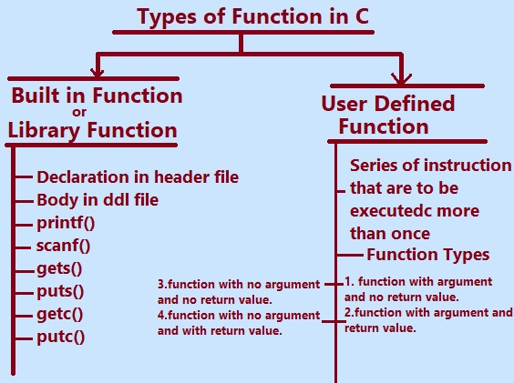

In this tutorial section we will learn Types of Function in C Language.
In the C programming language, functions are organised block of codes that performs specific task and promote reusability.
Functions provide reusability and modularity in program code. It allows better organization and easier maintenance of programs.
C programming language supports several types of functions based on their return type and purpose.
Here are some common types of functions that C Language supports:
1. Library functions or inbuilt functions.
2. Userdefined functions.
1.Library Functions or inbuilt functions: These functions are inbuilt or predefined in C libraries and can be re-used by including the name of appropriate header files. Examples include functions like printf(), scanf(),gets(),pusts(),strcpy(),strlen(),strcmp(),getc() etc, these are just a few examples of the types of functions in C programming.
The given diagram demonstrates the types of function in C programming language.
Types of function in C Language

Types of Functions in C Programming Language.
Note: Given diagram just demonstrates the some inbuilt functions but not the complete inbuilt functions.
1.Library Functions:
Library functions in C provides a wide range of functionalities and features including string manipulation,input/output operations , mathematical calculations, file handling, memory management and more. These functions are typically declared in header files and can be accessed in the program by including the appropriate header file in your C program. Let us learn some library functions.
a. printf() Function:In C programming printf() is part of the standard (stdio.h) input/output library and is commonly used for printing formatted text on the output console.
The syntax for the printf() function is as follows:
printf("format string", argument1, argument2, ...);
The "format string" is a string literal that specifies the desired format for the output. It can contain plain text and format specifiers, which are placeholders for the values to be printed. Format specifiers start with a percent sign (%) and are followed by a character that represents the data type of the corresponding argument.
Here are some commonly used format specifiers:
- %d or %i: for printing integers
- %f: for printing floating-point numbers
- %c: for printing characters
- %s: for printing strings
The arguments (optional) are the values to be printed in place of the format specifiers. They can be variables, constants, or expressions.
b. scanf():scanf() is the standard input function In C programming language. scanf is a function that scan Formatted String. It is used to read data from standard input stream i.e. usually from keyboard (stdin) and then writes the result into the given arguments.
scanf() accepts string, character, and numeric data from the user using standard input.
scanf also uses format specifiers like printf() function.
scanf() Syntax:
The syntax of scanf() function is some what similar to the syntax of printf() function.
int scanf( const char *format, ... );
Here,
int is the return type of the scanf() function.
format is a string that contains the format specifiers(s).
“…” indicates that the function accepts a more number of arguments.
C program to illustrate printf() and scanf() Function.
#include<stdio.h>
int main()
{
int a;
printf(" Enter any number \n");
scanf("%d",&a);
printf("\n The Number is %d",a);
return(0);
}
Output:
Enter any number
5
The Number is 5
c. gets(): function in C programming is used to read a line of text from the keyboard know as standard input and stores it in a character array. The gets() function allows the user to enter the space-separated strings. It returns the string entered by the user. The gets() adds null character to the array to make it a string.
The gets() functions reads characters until the newline character(‘\n’) or the end-of-file character encountered.
d. puts():The puts() function in the C programming language is used to output a string to the standard output stream usually is the
console. The puts() function takes the null-terminated string as an argument and displays it on the screen followed by a newline character.
C program to demonstrate use of gets() and puts() functions.
/* use of gets() and puts() functions */
#include <stdio.h>
int main()
{
char city[50];
printf("Enter your city name: ");
gets(city);
printf("Welcome to, ");
puts(city);
return 0;
}
Output:
Enter your city name:
Pune.
Welcome to Pune.
Program Explanation:
In the program given, the `gets()` function reads a line of text including spaces from the user and stores it in the city array. The puts() function displays the entered city name on the console.
Note:The gets() function is considered unsafe because it does not perform any bounds checking, which can lead to buffer overflow vulnerabilities. So it is safe to use alternatives like fgets() instead of gets().
e. getc():The getc() function in the C language is used to read a single character from a specific input stream. It takes the input stream as an argument and returns the character read as an integer value.
f.putc():In the C programming language the putc() function is used to write a character to a specified output stream.
It takes two arguments:
i.The first argument is the character that you want to write. the data type of it is of `int`, but its common use is with character variables or literals types char.
ii. output stream is the second argument where you want to write the character. The type of this argument is `FILE*`, which represents a file stream. the standard error stream can be represented by `stderr` and the standard output stream can be represented by `stdout`.
Program to demonstrate getc() and putc()
#include<stdio.h>
int main()
{
char ch;
FILE *fptr;
if (fptr = fopen("poem.c", "r"))
{
ch = getc(fptr);
while (ch != EOF)
{
putc(ch, stdout);
ch = getc(fptr);
}
fclose(fptr);
return 0;
}
return 1;
}
User Defined Functions:
User-defined functions in c programming is some what same as inbuilt functions.The user defined functions that are created by the programmer to perform specific operations or task. These functions are not available in c Library or predefined in the c programming language but are defined and created by the user to meet their specific task and requirements.
User defined function Types:
1. Function with argument and not returning value.
These type of function in C programming is referred as "void" function. The void keyword indicates that the function does not return any value.
/*a void function that takes two integer arguments and performs a simple addition*/
#include <stdio.h>
void addition(int x, int y)
{
int tot = x + y;
printf("The sum is: %d\n", tot);
}
int main()
{
int x = 5,y=3;
addition(x, y);
return 0;
}
Output:
The sum is :8.
Explanation:
The `addition()` function takes two integer arguments `x` and `y`. The function calculates their sum and displays it using `printf()`. The `main()` function calls `addition()` with the values `x` and `y` as arguments.
2.Function with argument and with returning value.
These type of function in C programming is takes the input and return the value. The int keyword indicates that the function return any integer value.
/* function that takes two integer arguments performs a simple addition and return the result*/
#include <stdio.h>
int addition(int x, int y)
{
int tot = x + y;
return(tot);
}
int main()
{
int x = 5,y=3;
printf("\n %d +%d =%d",x,y,addition(x, y));
return 0;
}
Output:
5 + 3 =5
3.Function without argument and with no returning value.
These type of function in C programming does not take the input and does not return the value. The void keyword indicates that the function does not return a value.
/* function that does not takes arguments performs a simple addition and does not return result*/
#include <stdio.h>
void addition()
{
int x=9, y=8,tot=0;
tot = x + y;
printf("\n %d + %d =%d",tot);
}
int main()
{
// call the function.
addition();
return 0;
}
Output:
9 + 8 =17
4.Function with no argument and with returning value.
These type of function in C programming does not takes the input and dose return the value.
/* function that takes no arguments performs a simple addition and return the result*/
#include <stdio.h>
int addition()
{
int x,y,tot=0, ;
printf("\n Enter any two numbers");
scanf("%d%d",&x,&y);
tot=x+y;
return tot;
}
int main()
{
printf("\nAddition=%d",addition()); // calls the functionbr
return 0;
}
Output:
Enter any two number.
5
3
Additio =5
Previous Topic:-->> Function Declaration in C || Next topic:-->>Nesting of Function in C.
Other Topics:
Variables and Identifiers
Relational Operators
if-else statements
Switch case
While Loop
Infinite while Loops
C FOR Loop
Infinite for Loops
Continue in Loops
One Dimensional Array
Two Dimensional Arrays
Read and Display 2D Arrays
Types of functions
Passing Array To Functions
Nesting of Function
Array vs Structure
Array of Structure
Structures and Functions
Structures Within Structures
Use Of Pointers In C
File Handling In C
Loops FAQ
Arrays FAQ
count vowels in a file
Function FAQ
Conditional Statements Assignments
For Loops Assignments
Arrays Assignments
Function Assignments
Structure Assignments
Pointers Assignments
Files Assignments
Storage classes Assignments
Binary Files
count words,lines in a file
Copy files
Update File
Continue in Loops
break in Loops
Difference Between While and Do while
difference while do..while & for
malloc
calloc
Storage Classes
Operators MCQ
Conditional Statements MCQ
Loops MCQ
Arrays MCQ
Function MCQ
Structure MCQ
Pointers MCQ
Files MCQ
Storage classes MCQ